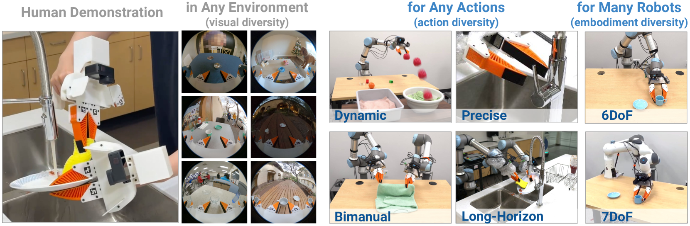
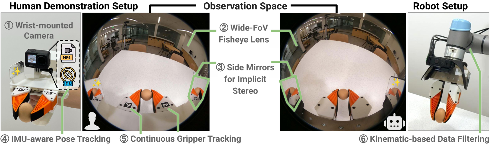

제출: 2024년 2월 15일 (v1) → 2024년 3월 6일 (v3) · 최종 BoM $73 + GoPro $298
한 줄 요약 (TL;DR)
로봇 없이도 로봇 정책을 가르치는 데이터 수집·학습 프레임워크. 3D 프린트 휴대형 그리퍼(780g, BoM $73)에 GoPro + 155° 어안 + 사이드 미러(암묵적 스테레오) + IMU를 장착해 사람의 손조작을 그대로 기록. 정책은 diffusion policy이며 inference-time latency matching과 relative-trajectory action으로 실물 로봇(UR5·Franka)에 zero-shot 전이. 컵 정렬 100%·동적 던지기 87.5%·양팔 세탁물 접기 70%·설거지 70%. 1,400 데모로 30 미지 환경 in-the-wild 컵 정렬 71.7%. 이후 π0·pi07·Data Scaling Laws의 표준 데이터 인터페이스가 됨.
1배경 · 문제의식
실로봇에서 수집한 데모는 씬·물체·환경 다양성이 극히 제한된다. 사람의 손 조작은 풍부한 in-the-wild 데이터를 준다는 매력이 있지만, (i) 카메라 시점, (ii) 손의 자유도, (iii) 관측·행동의 지연 정합, (iv) 물리적으로 그리퍼와 다른 손의 접촉 특성이 로봇으로의 전이를 방해한다. UMI는 이 4가지를 하드웨어(그리퍼·미러·GoPro·IMU)와 소프트웨어(latency matching·상대 trajectory)로 정면 해결한다.
2핵심 Contribution
휴대형 UMI 그리퍼 하드웨어 — 3D 프린트, 780g, 310×175×210mm, BoM $73 + GoPro $298. 사이드 미러로 암묵적 스테레오 획득, soft finger에 fiducial 마커로 gripper width 자동 추적. 로봇 팔(UR5·Franka)에도 동일 그리퍼를 그대로 부착.
Inference-Time Latency Matching (PD1) — 카메라·proprio·gripper 각각의 지연을 개별 측정 → 가장 늦은 관측(≈10~20Hz 카메라)에 맞춰 정렬. bimanual은 ±1/60초 이웃 프레임 매칭. 액션은 지연 보상해 미리 송신, 오래된 예측은 폐기.
Relative Trajectory Action — 절대 pose가 아닌 현재 pose 기준 SE(3) 상대 궤적을 출력. 캘리브레이션 오차·embodiment 차이에 강인.
Diffusion Policy로 4가지 어려운 태스크 — Dynamic(던지기), Bimanual(빨래 개기), Precise(컵 정렬 20mm 오차), Long-horizon(설거지)까지 하나의 프레임으로 처리. 태스크만 데이터 바꾸면 됨.
In-the-wild zero-shot 일반화 — 30개 미지 환경 컵 정렬 71.7%, 1,400 데모로 학습.
3Method
UMI 그리퍼 (하드웨어)
바디
3D 프린트 parallel-jaw gripper, 780g, 310×175×210mm
카메라
GoPro Hero 9/10 + 155° 어안 렌즈 (내장 IMU 60Hz)
암묵적 스테레오
양옆 사이드 미러로 카메라 주변에 좌우 시점 획득 (별도 추가 카메라 불필요)
Gripper Width
soft finger + fiducial 마커로 카메라만으로 연속 폭 추적
비용
BoM $73 (그리퍼 부품) + GoPro $298 = ≈$371
로봇 통합
UR5 / Franka Emika FR2 손목에 동일 그리퍼 장착 (관측 시점 동일)
Inference-time Latency Matching (PD1)
관측 스트림별 지연을 사전에 계측하고, 가장 늦은 관측(카메라 10~20Hz)의 캡처 타임스탬프에 맞춰 gripper·robot state를 linear interpolation. bimanual은 두 팔 프레임을 ±1/60초 근접이웃으로 soft-sync. 액션은 예측 지연을 감안해 앞서 송신하고, 누적 지연으로 낡은 예측은 폐기. 팔·그리퍼 실행 지연도 각각 별도 보정.
어안 raw 이미지 + 상대 EEF 궤적 이력 + gripper width (+ bimanual 시 inter-gripper pose)
행동
현재 pose 기준 relative SE(3) 궤적 + gripper width
4실험 결과
태스크별 성공률 & 데모 수
태스크
데모
성공률
비고
컵 정렬 (좁은 목표)
305
20/20 (100%)
cross-robot 18/20 (90%)
Dynamic Tossing (동적 던지기)
280
105/120 (87.5%)
latency matching 없으면 57.5%
Bimanual Cloth Folding
250
14/20 (70%)
inter-gripper proprio 없으면 30%
Dish Washing (long-horizon)
258
14/20 (70%)
CLIP 비전 인코더 필요
In-the-Wild 컵 정렬
1,400
71.7%
30 미지 환경 zero-shot
주요 Ablation
변형
성공률
Full UMI (Fisheye + relative + mirrors)
100%
어안 미사용 (일반 렌즈)
55%
delta action (상대 궤적 대신 delta pose)
80%
절대 action (calibration 민감)
25%
사이드 미러 미사용
85%
디지털 미러 반사 (동일 카메라 하나로 좌우 반사)
100%
데이터 수집 효율
UMI 그리퍼 vs SpaceMouse 원격조작: ≈3× 빠름.
UMI 그리퍼 vs 맨손: 태스크에 따라 48~64% 수준 속도(그래도 원격조작보다 빠름).
SLAM 정확도(위치/회전): 6.1mm / 3.5°. bimanual 상대 pose 오차 10.1mm.
5Ablation / 관찰 (핵심 함정)
지연은 진짜로 성능을 좌우한다 — Dynamic Tossing에서 latency matching 없이 성공률 87.5 → 57.5%로 급락. 정적 pick-place는 상대적으로 덜 민감하지만 동적 태스크에서는 결정적.
상대 궤적 표현의 위력 — 절대 pose → 25%, delta pose → 80%, relative trajectory → 100%. UMI가 여러 embodiment(UR5·Franka)에 전이될 수 있는 핵심.
암묵적 스테레오(사이드 미러) & 디지털 미러 — 미러 제거 시 15%p 하락. 심지어 이미지에 반사 자체를 넣는 것만으로도 성능이 크게 회복 → depth cue가 정책 안정화에 실질 기여.
비전 인코더 스케일 — 설거지 같이 시각적으로 복잡한 태스크는 CLIP-L 필요; 단순 태스크는 ResNet-34로 충분.
6핵심 Figure / Table

Figure 1 — UMI 하드웨어 & 데이터 흐름. 3D 프린트 gripper + GoPro 어안 + 사이드 미러 + IMU. 사람의 손 조작을 그대로 기록해 UR5·Franka에 동일 그리퍼로 전이. (출처: arXiv:2402.10329)

Figure 2 — UMI 4대 태스크. Precise(컵 정렬 20mm), Dynamic(던지기), Bimanual(빨래 개기), Long-Horizon(설거지). 하나의 프레임으로 모두 학습·평가. (출처: arXiv:2402.10329)
왜 표준이 되었나 — UMI는 이후 (i) Data Scaling Laws(2410.18647)의 수집 인터페이스, (ii) π-series·pi07 등 대규모 VLA 학습 mix, (iii) Data Pyramid(2607.24744)의 "UMI-style layer"로 명시적으로 지목되며 real-robot 데이터의 접근성·다양성 병목을 완화한 대표 파이프라인이 됨.